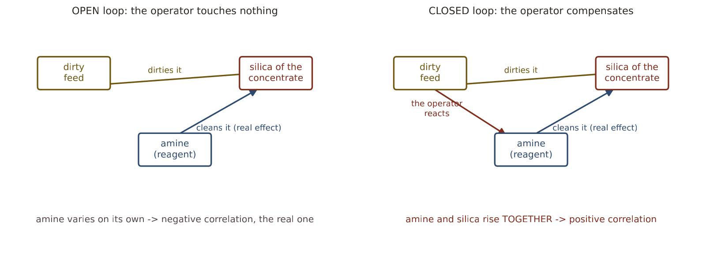
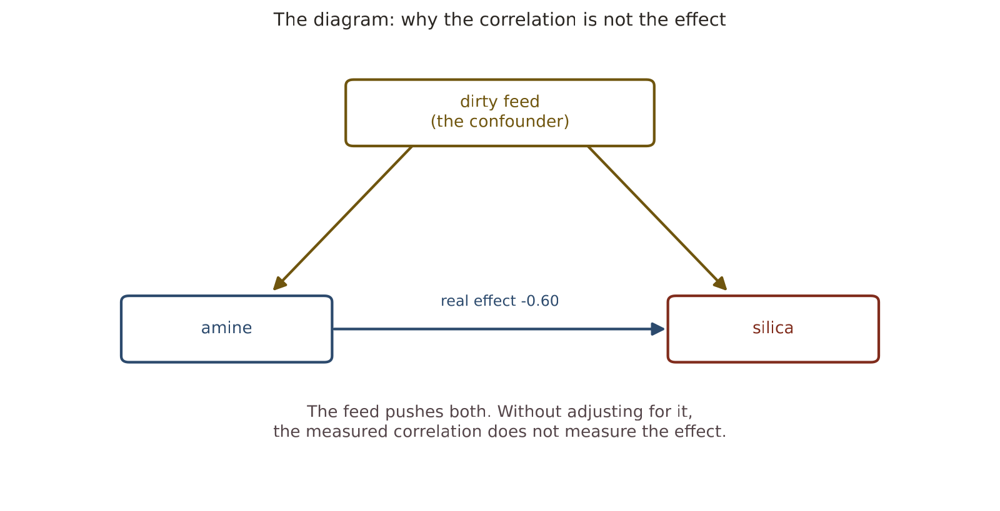
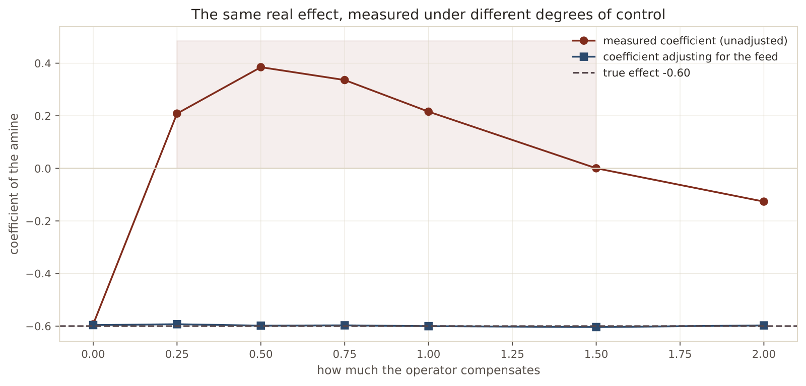
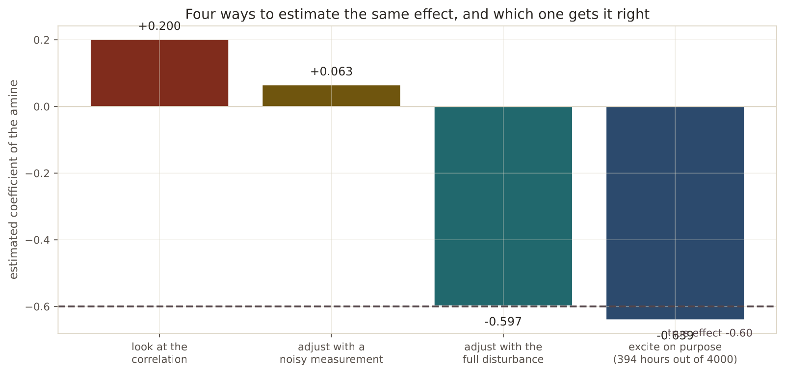

In 30 seconds
- +0.16. The correlation of the amine with the silica, when the chemistry predicts the opposite sign. That contradiction is the key to the whole project.
- Simulated, the trap shows. With the real effect fixed at −0.60, a partial compensation by the operator measures it as +0.41.
- Adjusting for the disturbance fixes it, and returns −0.600 exactly. But it has to be measured well.
- A noisy measurement is not enough: the coefficient stays at +0.080, still with the wrong sign.
- The only thing that works is exciting on purpose. With 403 hours of random dosing it comes out at −0.654.
What this module solves
Thirteen modules measuring that it cannot be predicted. This one explains why, and the explanation is not from machine learning.
The plant operates in closed loop. When a control does its job well, it moves the manipulated variables to cancel the disturbances, and in doing so erases precisely the variation a model would learn from.
The symptom was in module 1, in plain sight, and nobody treated it as what it was: a correlation with the wrong sign.
Before the theory: a toy example
A plant where we know the truth because we set it ourselves.
dirty feed RAISES the silica +1.0 per unit
amine LOWERS the silica −0.6 per unit <- the real effectFour hours, two scenarios. In the first the operator touches nothing. In the second he doses more amine when dirty feed comes in.
Step 1. Without an operator
| Hour | Feed | Amine | Silica = 1.0·feed − 0.6·amine |
|---|---|---|---|
| 1 | 0 | 2 | 0 − 1.2 = −1.2 |
| 2 | 0 | 4 | 0 − 2.4 = −2.4 |
| 3 | 0 | 6 | 0 − 3.6 = −3.6 |
| 4 | 0 | 8 | 0 − 4.8 = −4.8 |
More amine, less silica. The relationship shows directly, and its slope is the real effect.
slope = (−4.8 − (−1.2)) / (8 − 2) = −3.6 / 6 = −0.6Step 2. With an operator, compensating in part
Now the feed varies, and the operator adds one unit of amine for every unit of dirt.
| Hour | Feed | Amine | Silica = 1.0·feed − 0.6·amine |
|---|---|---|---|
| 1 | 2 | 2 | 2 − 1.2 = 0.8 |
| 2 | 4 | 4 | 4 − 2.4 = 1.6 |
| 3 | 6 | 6 | 6 − 3.6 = 2.4 |
| 4 | 8 | 8 | 8 − 4.8 = 3.2 |
Step 3. Measure the slope now
slope = (3.2 − 0.8) / (8 − 2) = 2.4 / 6 = +0.4+0.4. The real effect is still −0.6 and has not changed one bit. What has changed is what gets measured.
And the explanation is simple: the operator only compensates 60% of the problem. Each unit of dirt raises the silica by 1.0, and the added amine lowers it by 0.6. A residue of +0.4 remains, which rises with the dosing.
Step 4. The cure, and its price
If the feed is known, you can ask what happens to the silica at equal feed. In the four hours of step 2 no two have the same feed, so it cannot be done. The feed has to be measured and it has to vary independently.
When that holds, the effect is recovered exactly. When the measurement is bad, it is not.
Step 5. What just happened
A correct datum, a correct calculation, and an inverted conclusion. Nobody measured wrongly.
Correlation answers "what happens when the amine is high". The useful question is another: "what would happen if I raised the amine". They differ whenever something pushes both, and in a controlled plant that something is the very reason the control exists.
Glossary
10 terms, in plain words
- Open loop. The operator or the control does not react. The manipulated variables vary on their own.
- Closed loop. The control moves the manipulated variables in response to what it measures.
- Disturbance. What comes in without anyone deciding it. Here, the feed grade.
- Manipulated variable. The one the operator moves. Here, the amine.
- Confounder. Something that causes both the supposed cause and the supposed effect. In Spanish, confusor.
- Adjusting for a variable. Comparing only cases with the same value of that variable. Also called conditioning.
- Observational. Looking at what happened without intervening.
- Interventional. Moving something on purpose and seeing what happens.
- Excitation. Moving a variable deliberately and independently, so its effect can be measured. In control it is called a test signal.
- Identifiability. Whether the effect can be recovered from the data available. Sometimes the answer is no.
Step by step
Step 1. Compare the measured sign with the expected sign
The chemistry of reverse flotation says more collector carries more gangue, so more amine should mean less silica. If the data say otherwise, there is something structural.
Step 2. Simulate a plant whose truth is known
In the real data the true effect is unknown, so nothing can be checked. In a simulation it can: we set it ourselves and see what each method measures.
Step 3. Sweep the degree of compensation
From an operator who touches nothing to one who over-compensates. The trap appears in the middle.
Step 4. Try the cure
Adjust for the disturbance. Then repeat with the disturbance badly measured, which is the real situation of this project.
Step 5. Try what does work
Deliberate excitation: moving the amine at random for some hours, independently of the silica.
The code, in parts
Step 1. The simulated plant, in three lines
feed = RNG.normal(0, 1, HOURS)
amina = response * feed + RNG.normal(0, 0.5, HOURS)
silica = 1.00 * feed + (-0.60) * amina + RNG.normal(0, 0.3, HOURS)line by line, 3 entries
RNG.normal(0, 1, HOURS)- Random numbers from a bell curve of mean zero and deviation one. It is the disturbance.
response * feed- The operator's rule: how much amine he adds per unit of dirt. With zero he does not react.
(-0.60) * amina- The true effect, set by us. Nothing we measure afterwards changes it.
1. LO QUE MIDEN LOS DATOS REALES
correlacion amina con silica: +0.171
la quimica predice el signo: negativo (mas colector, menos silice)
el dato dice: positivo -> contradiccionOn hourly data the correlation is +0.171, and on the full file at 20 seconds it was +0.16. Both are positive, and both contradict the chemistry.

Step 2. Measure the coefficient with and without adjusting
def regress(frame, columns):
design = np.column_stack([np.ones(len(frame))] + [frame[c] for c in columns])
coefficients, *_ = np.linalg.lstsq(design, frame["silica"], rcond=None)
return dict(zip(["intercepto"] + columns, coefficients))line by line, 4 entries
np.column_stack([...])- Glues columns side by side to form the design matrix.
np.ones(len(frame))- A column of ones. It is what produces the intercept of the line.
np.linalg.lstsq- Solves least squares. It is the linear regression of module 3, written by hand.
rcond=None- Asks for the modern behaviour for deciding which singular values to discard.
2. LA MISMA PLANTA, SIMULADA CON EL LAZO ABIERTO Y CERRADO
efecto verdadero de la amina, fijado por nosotros: -0.60
respuesta del operador corr(amina, silice) coef. simple coef. con feed
abierto (sin operador) -0.277 -0.593 -0.596
respuesta debil (0,5) 0.350 0.406 -0.593
respuesta parcial (1,0) 0.370 0.193 -0.598
sobrecompensa (2,0) -0.576 -0.128 -0.597
Step 3. When the disturbance is badly measured
ruidosa = frame.copy()
ruidosa["feed"] = frame["feed"] + RNG.normal(0, 1.0, HOURS)
print(regress(ruidosa, ["amina", "feed"])["amina"])line by line, 2 entries
frame.copy()- An independent copy. Without it, modifying the column would change the original too.
+ RNG.normal(0, 1.0, ...)- Adds noise to the measurement of the disturbance, as much as the signal itself. It is the realistic case.
3. QUE PASA SI LA PERTURBACION NO SE REGISTRA
efecto verdadero -0.600
sin ajustar por la perturbacion +0.216
ajustando con la perturbacion completa -0.600
ajustando con una medida ruidosa +0.080Step 4. Excite on purpose
mask = RNG.random(HOURS) < 0.10
excited.loc[mask, "amina"] = RNG.normal(0, 1.5, int(mask.sum()))
print(regress(excited[mask], ["amina"])["amina"])line by line, 3 entries
RNG.random(HOURS) < 0.10- Marks one hour in ten at random. It is the fraction of the time devoted to the test.
excited.loc[mask, "amina"] = ...- In those hours the dosing is chosen at random, without looking at the silica. That breaks the loop.
regress(excited[mask], ...)- The estimate uses ONLY those hours. They are few, and they are the only ones that inform.
4. LO QUE SI FUNCIONARIA
usando solo las horas excitadas (403 de 4000): -0.654
efecto verdadero -0.600The result, measured
What we expected. That the control would dampen the correlation, leaving it near zero.
What came out. It does not dampen it: it flips its sign.
| Operator's response | Measured correlation | Unadjusted coefficient | Adjusting for the feed |
|---|---|---|---|
| None, open loop | −0.277 | −0.593 | −0.596 |
| Weak, 0.5 | +0.350 | +0.406 | −0.593 |
| Partial, 1.0 | +0.370 | +0.193 | −0.598 |
| Over-compensation, 2.0 | −0.576 | −0.128 | −0.597 |

What it means. The true effect is −0.60 in all four rows. The only thing that changes is how much the operator compensates, and that is enough for the measured coefficient to go from −0.593 to +0.406.
And there is an even more uncomfortable detail. Adjusting for the feed, the four rows return approximately −0.60, with an error of three thousandths. The correct method works perfectly. The problem is not the method, it is what data there are.
Why in this plant the cure cannot be applied
| Estimate | Coefficient | Right? |
|---|---|---|
| Looking at the correlation | +0.216 | No, and with the wrong sign |
| Adjusting with a noisy measurement | +0.080 | No, still wrong |
| Adjusting with the full disturbance | −0.600 | Yes, exactly |
| Exciting on purpose, 403 hours out of 4,000 | −0.654 | Yes, with 9% error |

Adjusting with a noisy measurement gives +0.080. It still has the wrong sign.
That is not a technicality: it is the exact situation of this project. The real disturbance of this plant is the mineralogy of the feed, and of it there are only two laboratory assays per hour, one of which was frozen for 792 hours.
The closing of the project
These data cannot answer the question they were asked, and now it is known why.
It is not that machine learning is insufficient. It is that the necessary information was destroyed before it reached the file, by the very control system that makes the plant run. A control that erases the disturbances is doing its job. And in doing so, it leaves data from which the physics of the process cannot be learned.
The fourteen modules say the same thing from fourteen angles:
| Module | How it says it |
|---|---|
| 2 | Three different models tie at R² 0.04 |
| 4 | Honest validation gives −0.126 |
| 7 | The contribution over persistence is +0.009 |
| 8 | Four attacks on the verdict, and none moves it |
| 9 | The plant changed regime in May |
| 11 | Not even the sequence models fix it |
| 12 | Nor the classical baseline |
| 13 | A valid interval, and as wide as half the range |
| 14 | And this is the reason for all the previous ones |
What it would take, now with its technical name
- A setpoint log. Without knowing what the operator moved and when, his reaction cannot be separated from the effect of the process.
- The disturbance well measured. Mineralogy and feed grade at the frequency of the process, not two assays per hour.
- An excitation campaign. Moving setpoints in a planned way for a few days. The simulation says that with 10% of the hours the effect is recovered with 9% error.
That last one is the real recommendation, and it does not cost a model: it costs a week of plant.
Watch out
- Correlation and effect are different questions. One answers what happens when the variable is high. The other, what would happen if you raised it.
- An inverted sign is an alarm, not a curiosity. It almost always means there is a confounder or a control loop.
- Adjusting for the confounder only works if it is well measured. With noise, the bias returns, and here even the sign.
- Partial compensation is the dangerous case. With an open loop the sign is correct, and with over-compensation too. The trap is in the middle, which is where almost every plant operates.
- SHAP and feature importance do not fix this. They faithfully explain the model, and the model learned the inverted relationship.
- Closed-loop data do not identify the plant. It is a classic result of system identification, and here it has been rediscovered the hard way.
Metallurgical bridge
This is exactly why flotation tests are done in the laboratory and not by reading the plant history. In a laboratory test the dosing is set on purpose, everything else is held the same, and the recovery is measured. That is deliberate excitation.
In the plant there are never two comparable hours. The ore changes, the flow changes, three setpoints change at once, and the operator reacts to everything. That is why an experienced metallurgist distrusts conclusions drawn from the history, even with six months of data: he knows the circuit was compensating the whole time.
The excitation campaign has its name in the trade: a planned plant trial. It is scheduled, the shift is told, a setpoint is moved in steps and everything is recorded. It costs a few days of operation away from the optimum. In return it gives the one thing the history cannot: the circuit's response to a change nobody made to compensate for something else.
Review
The amine correlates +0.16 with the silica and the chemistry says it should be negative. Who is wrong?
Neither. The chemistry is right about the effect and the data are right about what was observed.
What happens is that correlation does not measure the effect when there is a control loop. The operator adds amine precisely when the silica rises, so the two rise together. This module's simulation reproduces it: with the real effect fixed at −0.60, a partial compensation is measured as +0.406. The datum is correct and the conclusion drawn from it, inverted.
Why is partial compensation the dangerous case, and not full compensation?
Because with an open loop and with over-compensation the sign comes out right, and in the middle it does not.
Without an operator, the amine varies on its own and its relationship with the silica is the real one, −0.593 in the simulation. With strong over-compensation, the operator overshoots so much that the appearance flips back and the coefficient comes out negative again, −0.128. Right in the middle, when the operator corrects part of the problem but not all of it, a positive residue remains that rises with the dosing. And compensating partially is what any real plant does.
Adjusting for the feed returns −0.600 exactly. Why not just do that and be done?
Because in the file that variable is badly measured, and with a bad measurement the adjustment is no use.
In the simulation, adjusting with the full disturbance returns the true effect with three thousandths of error. Adjusting with a measurement that carries as much noise as signal leaves the coefficient at +0.080, still with the wrong sign. In this plant the real disturbance is the mineralogy of the feed, and of it there are two assays per hour, one frozen for 792 hours. The cure exists and the data to apply it do not.
What is deliberate excitation and how much would it cost here?
Moving a variable on purpose and at random, without looking at what the process is doing, for a fraction of the time.
That breaks the loop: in those hours the amine no longer responds to the silica, so its relationship with it becomes the real one again. In the simulation 10% of the hours are devoted to it, 403 out of 4,000. The effect is recovered at −0.654 against the true −0.600, with 9% error. Carried over to the plant it would be a few days of operation with setpoints moved on purpose. It is expensive in production and cheap compared with deploying a system built on an inverted relationship.
If the control erases the information, is the conclusion that a plant can never be modelled?
No. The conclusion is that the physics of a plant cannot be identified from closed-loop operating data, without excitation and without knowing the controller.
That leaves other things open. You can predict with inertia, which is what persistence does and works well at one hour. You can detect anomalies, which does not need causality. And you can model the real physics if planned trials are done. What you cannot do is extract cause-and-effect relationships from a history where somebody was compensating the whole time, and this project is the measured demonstration of that claim.